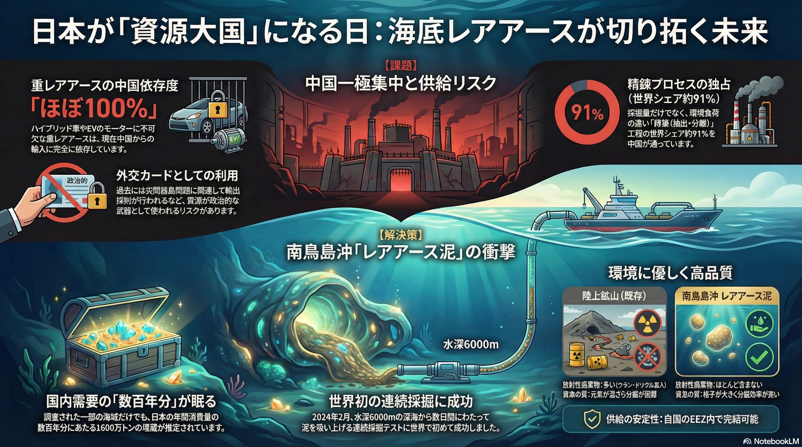

日本が「資源大国」になる日：南鳥島沖レアアース泥の衝撃

【画像解説】水深6000mに眠る数百年分の希望
日本のEEZ（排他的経済水域）内にある南鳥島沖の海底には、国内需要の数百年分に相当する膨大なレアアース泥が眠っています。2024年には世界初の連続採掘テストに成功し、実用化に向けた大きな一歩を踏み出しました。陸上の鉱床と比較して放射性物質をほとんど含まず、環境に優しい高品質な資源であることが特徴です。この開発が進めば、中国への100%近い依存を脱却し、日本が自国の資源でハイテク産業を支える「資源大国」となる未来が現実味を帯びてきます。